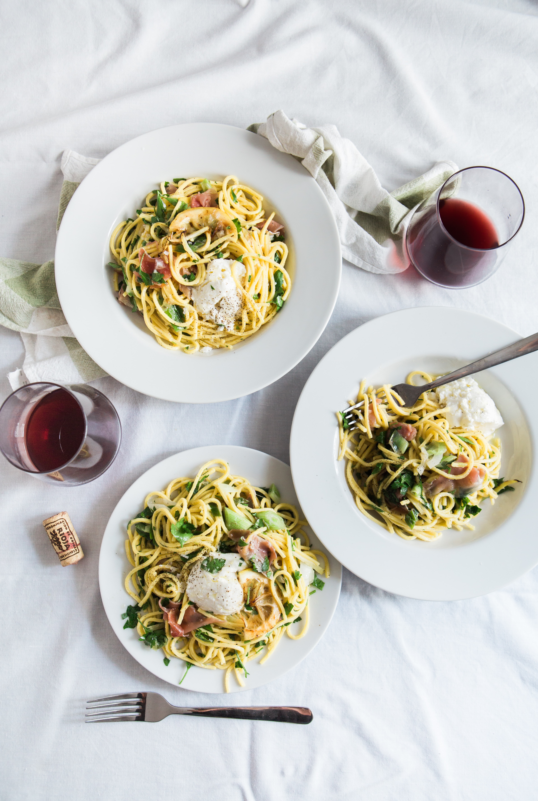

Bucatini Con Piselli - Pasta with Panchetta and Peas

Description:
There is nothing more comforting after a long days work than a big bowl of buttery pasta. If you're looking to step up your game from your usual buttered noodles, try our Bucatini con Piselli.
This recipe takes just 3 extra ingredients to turn it from child like to adulthood (we're not counting garlic or onions because those should be in every savory recipe you're making, even if they're just in powdered form).Pair this pasta with our Delicious Garlic Herb Focaccia Bread and finish the meal off with our Bourbon Peanut Butter Bacon Chocolate Chip Cookies!
I know you must be wondering what exactly is bucatini. Think of it as the love child of Spaghetti and macaroni, if spaghetti was the husband. It's a long thin noodle that without looking closely could pass as spaghetti, however upon closer inspeciton has a hollow inside perfect to soke up creamy sauce.
Let your heart decide how many servings this makes!
What You Need:
- 16 oz Bucatini
- 8 oz pancetta, diced
- 1/2 onion, chopped
- 1 (10 oz) bag frozen peas
- Atleast 2 cloves garlic, minced
- Atleast 1/4 cup grated parmesan
- 1/2 lemon, juiced
- salt and pepper
How You Make It:
- Bring a large pot of salted water (if it doesn't taste like you're drowning in the ocean, add more salt) to a boil over medium heat. Add pasta and cook until al dente (about 7-8 minutes). Drain pasta and reserve 1/2 cup of pasta water
- Saute your diced pancetta in a large saucepan over medium-high heat until golden and crisp, (about 6 minuetes). Transfer to a paper towel lined plate.
- In the same pan saute onions until softened, (about 5 minutes)e
- Add peas and garlic to the onions and saute for 3 minutes
- Stir in parmesean, pasta and pancetta and add pasta water
- Top with salt and pepper and lemon juice